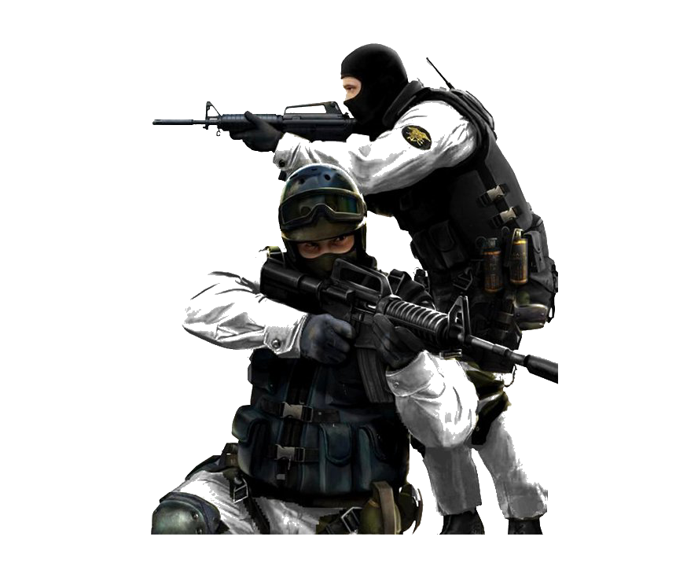

There is a version of the 24-hour city that is glamorous. Jazz clubs. Diners. The last bus home and someone interesting on it. That version existed, briefly, in a handful of places, and it was good.
The version we have now is different. It is logistics. It is a warehouse that cannot go dark because the sortation algorithm runs continuously and the humans inside it are cheaper than the reconfiguration cost of stopping.
The romantic 24-hour city was organized around desire. Someone wanted to be there at 3am. The logistical 24-hour city is organized around throughput. No one wants to be there. They are there because the model requires it.
The lights are always on here. That used to mean something.
OUTSIDE A FULFILLMENT CENTER, 3:14AM
This is the distinction that city planners, when they invoke "vibrancy," consistently fail to make. Vibrancy is not a property of illuminated windows. It is a property of people choosing to be somewhere.
We built infrastructure for the night and called it nightlife. We built coverage for every hour and called it community. We lit every corner and called it safety. None of these substitutions are neutral.
A city that cannot sleep is not awake. It is running a process.
ARTICLE
THREE WAYS TO DISAPPEAR
M. OKAFOR

analog, unconnected
This is not a paranoia piece. This is a practice piece. Paranoia assumes a specific adversary. Practice assumes a general condition and responds proportionally.
Method one: go analog for the boring stuff. Most surveillance is passive and opportunistic. It collects whatever flows through the pipes. A notebook does not have a privacy policy. A pocket calendar does not sync to a data broker. Shopping lists, personal notes, appointments with people you trust — none of these need a network.
Method two: reduce identity surface area. You have more accounts than you need. Some are attached to your real name, phone number, a payment method, a device fingerprint. The reduction is not deactivation. It is to stop creating new ones. Every new account is a new exposure surface.
Method three: make boring choices visible. Notice when you are making a choice. Not every choice requires a different decision. But many defaults were set by someone whose interests are not yours. Default on: location sharing, analytics, cross-app tracking, personalized ads. Reversing these — not in every case, just deliberately — changes what flows through the pipes.
THE ACTUAL THREAT MODEL
You are probably not being targeted specifically. You are in a database being queried by systems with no opinion about you as a person. The goal is not to escape the database. The goal is to make the query less useful.
ARTICLE
THE LAST PAYPHONE
T. NAKAMURA
delancey and essex, 2019
A photo essay without photos, because we lost the memory card.
The payphone on Delancey and Essex was removed in 2019. There is a LinkNYC kiosk there now. The kiosk offers free calls, fast Wi-Fi, and a screen that displays advertisements. It also collects device identifiers from passing phones.
The payphone offered free emergency calls and required a quarter for everything else. It collected nothing. It remembered nothing. When you hung up, the conversation was over.
This was not a bug. This was a feature that nobody wrote down because nobody thought it would need to be defended.
You could call anyone and they couldn't call you back unless they already knew where you were.
A PERSON WHO REMEMBERED THE QUARTER
The last payphone in New York City was removed from a hotel lobby in 2022. It is now in a museum. Which is the correct place for things that society has decided it no longer needs, and which is also the correct place to go to feel the specific grief of infrastructure loss.
The kiosk is faster. The kiosk is free. The kiosk is always available. The kiosk knows your phone was near it at 11:47am on a Tuesday in March.
The payphone knew nothing. That was the whole point.
ARTICLE
SMALL GRID THEORY
S. REYES
small block grid, central district
The most livable neighborhoods in most cities share one physical characteristic that urban planners consistently undervalue: small blocks. Not "walkable" in the sense of having sidewalks. Not "mixed-use" in the sense of having a Starbucks on the ground floor of a condo tower. Small blocks. Short distances between intersections. Many choices per square mile.
The reason small blocks win is not aesthetic. It is combinatorial. A grid of small blocks offers exponentially more route choices than a grid of large blocks covering the same area. More route choices means more foot traffic distributed across more paths means more storefronts viable means more activity.
Large blocks produce dead zones. Not because they are ugly — though they often are — but because a single failed anchor tenant takes an entire frontage offline. On a small block, one failed storefront is one failed storefront. On a superblock, it is four hundred feet of blank wall.
Density is not the variable. Granularity is the variable.
You cannot retrofit walkability onto a large-block grid by adding mixed-use zoning. You can add a coffee shop on the ground floor of a 700-foot-frontage building and it will feel like a coffee shop in an airport. Because it is.
The blocks have to be small first. Everything else follows from the blocks. Jane Jacobs said this in 1961. We have spent sixty years building the opposite.
ARTICLE
THE MAINTENANCE WORKERS
P. VOSS
substation crew, 2:30am
Every city has two kinds of workers. The ones you see and the ones who make it possible for you to see them. The street-level economy — cafés, shops, deliveries — depends on a substrate that is mostly invisible: the people who fix the pipes, patch the road, swap the transformer, re-hang the signal.
They work at 2am because the work cannot happen when the city is using itself. The road has to be empty. The water main has to be isolated. The substation has to be de-energized. The shift starts at midnight and ends before anyone notices it happened.
This is by design. The ideal maintenance event is one that nobody knows occurred. The pipe doesn't burst, so there's no story. The signal doesn't fail, so there's no backup. The transformer holds, so the hospital stays on.
INVISIBILITY AS SUCCESS METRIC
The KPI for infrastructure maintenance is the absence of events. Nothing happened. That is the goal. That is how you know it worked.
We have built an economy around visibility — metrics, dashboards, likes, impressions. And then we have built the physical world on top of people whose best outcome is that you never think about them at all.
ARTICLE
THE SIGNAL LAYER
P. VOSS
mesh node, lamp post array
Every city runs on a layer you cannot see. Not the pipes, not the wires — those are findable, mappable, orange-flagged before you dig. The signal layer is different. It is the mesh of transmissions that tells the traffic light what the car did three blocks away, that tells the transit authority the bus is running four minutes late, that tells the logistics platform the driver has paused.
The signal layer is where the city becomes legible to itself. Without it, the buses are just buses. With it, the buses are a dataset. The streets are a dataset. The pedestrians are a dataset. The city reads itself continuously and the reading changes what it does.
Most people do not know the signal layer exists. They know the wifi. They know the cell signal. They do not know the mesh, the LIDAR, the Bluetooth sniffers embedded in lamp posts, the license plate readers every four blocks, the acoustic monitors that can tell a gunshot from a car backfire with ninety-three percent accuracy.
WHAT THE SIGNAL LAYER KNOWS
Where you were. How fast you moved. What device you carried. Whether you stopped. For how long. Whether you stopped at that spot before.
The signal layer does not forget. The buses forget. The people forget. The signal layer keeps a log.
LETTERS
ON THE BUS PIECE (ISSUE 02)
You said the bus is slow because of choices, not physics. I've been thinking about this for three weeks. You're right and I hate it. — J.W., Chicago
CORRECTION
The Houston light rail does not go to the airport. We stated that it did. It does not. We regret this. — the editors
SUBMISSIONS
800 words or fewer. No pitches. Send it done. Plaintext. — void-dispatch@proton.me